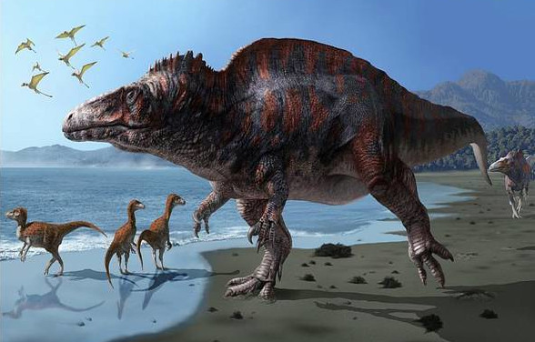

Acrocantossauro

O Acrocantossauro (Acrocanthosaurus, nome que significa "lagarto de grande espinha") é um gênero de um dinossauro terópode que existiu onde hoje é a América do Norte durante os períodos Aptiano e Albiano do período Cretáceo Inferior, aproximadamente 125 a 100 milhões de anos atrás. Como a maioria dos gêneros de dinossauro, o Acrocanthosaurus possui apenas uma espécie, A. atokensis. Os restos de seus fósseis se encontram principalmente nos estados de Oklahoma, Texas e Wyoming (Estados Unidos), apesar de dentes atribuídos a ele terem sido encontrados, a grande distância ao leste, em Maryland.
Acrocanthosaurus foi um predador bípede. Como o nome sugere, ele é bem conhecido pela grandes espinhas em muitas de suas vértebras, que provavelmente apoiaram os músculos do animal ao longo do pescoço, costas e quadris.[1] O Acrocanthosaurus foi um dos maiores terópodes podendo chegar a 3,5 metros de altura, aproximando-se dos 11,5 metros de comprimento (38 pés), e pesando até cerca de 6,2 toneladas.[2] Grandes pegadas feitas por terópodes encontradas no Texas podem ser de Acrocanthosaurus, embora não tenha sido encontrada ligação direta com restos ósseos.
Recentes descobertas anunciaram muitos detalhes de sua anatomia, permitindo o estudos focalizados em sua estrutura cerebral e nas funções de seus membros anteriores. Acrocanthosaurus foi o maior terópode de seu ecossistema e provavelmente um superpredador, que provavelmente caçava grandes saurópodes, ornitópodes, e anquilossauros.
Recentes descobertas anunciaram muitos detalhes de sua anatomia, permitindo o estudos focalizados em sua estrutura cerebral e nas funções de seus membros anteriores. Acrocanthosaurus foi o maior terópode de seu ecossistema e provavelmente um superpredador, que provavelmente caçava grandes saurópodes, ornitópodes, e anquilossauros.